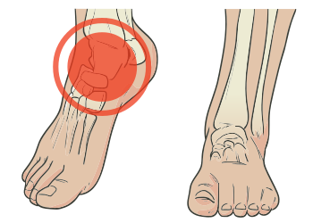

Osteoartrose, ou osteoartrite, é a designação que se dá à doença degenerativa que acomete as superfícies articulares e o osso subcondral/periarticular, decorrente dos efeitos de microtraumas repetitivos, ao longo dos anos, secundários ao movimento articular e ao atrito associado a esse movimento.
Considerando que alguma degeneração e perda de funcionalidade é esperada com o processo de senilidade, no final da vida, há um espectro que varia desde uma evolução esperada para a faixa etária, com certa dor e desconforto, até degeneração grave causando limitação da mobilidade, dor e deformidades articulares.
